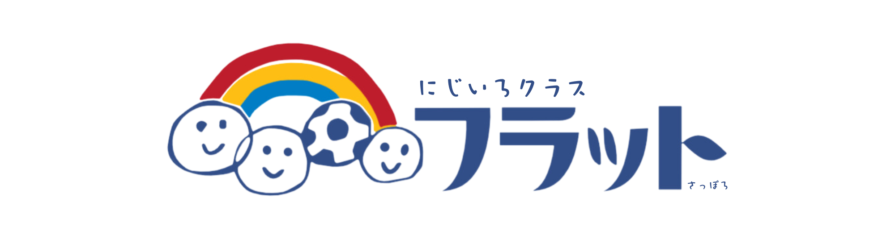

10びょうチャレンジ
「いま10秒！」と思った瞬間に止める体内時計ゲーム
⏱ 1〜3分🎯 低学年〜
むずかしさ ●○○
じかん・抑制あそぶ →

すべてのゲームを同じカードで一覧表示しています。やりたいゲームを1つ選んで、そのままスタートできます。
フラトレ・運動あそび・危険予知・SST・10分チェック・かたちパズル・国旗ゲームも、すべて同じ一覧から選べます。
任意。ここで1回入力すると、活動終了後のA4評価へ自動で引き継ぎます。
よく使うゲームをここからすぐ開始
この端末で最近開いたゲーム
88種類
「いま10秒！」と思った瞬間に止める体内時計ゲーム
表示された方向をすばやくタップ
学習モードと勝負モードでルールを練習
色を見て正しい名前を選ぶ
落ちてくる棒をギリギリでタップしてキャッチ
レベルが上がるほど長くなる迷路
タップで回転。成功すると台が小さくなる
1〜15を順番にそろえる定番パズル
動く点をゴール直前で止める
落ちてくるターゲットをタップして撃ち落とす
たくさんの中から指定された虫を見つける
動く虫を時間内にたくさんタップ
散らばった数字を1から順に探してタップ
1〜50を順番にすばやくタップ
2つの数字を選んで10になるペアを消す
隣り合う数字で10を作り連鎖を狙う
式と答えのペアを見つけてブロックを消す
素数だけを見つけてタップする数字ゲーム
数字を小さい順に並べるタイムアタック
表示された図形の名前を3択で答える
指定された数の約数をすべて選ぶ
2つの数に共通する約数を選ぶ
2つの数の公倍数を選ぶ
正しい計算答えを選びながらゴールへ進む
同じひらがなのペアをそろえる神経衰弱
ばらばらの文字を並べて言葉を作る
ばらばらのカタカナを並べて言葉を作る
文字の中から指定された言葉を見つける
文字の中から指定された言葉を見つける
4つの漢字を正しい順に並べる
カードをめくって思いがけない文を作る
大陸・海洋の名前をクイズで覚える
地方や特徴から都道府県名を当てる
1〜9個まで同時に振れるサイコロ
メンバーやお題を登録して公平に抽選
1〜75の数字をランダム抽選
出た目のお題で自分のことを話す
信号を見て「進む・止まる」を判断
相手がうれしい言葉か傷つく言葉かを考える
日付の前後関係をクイズで確認
商品代金ぴったりのお金を選んで支払う
好きな場所をタップして肉球を増やす
タップした場所から図形があふれる感覚遊び
文字を1拍ずつタップして音のまとまりを確認
漢字のパーツを組み合わせて1文字を作る
漢字の中から部首を見つけるクイズ
前から読んでも後ろから読んでも同じ言葉を探す
文字の中から四字熟語を順番に見つける
予算の中で買い物し、おつりを考える
並んだ硬貨の合計金額を答える
同じ金額になる硬貨の組み合わせを選ぶ
タイミングを合わせてシュートを決める
集中・記憶・判断に取り組む、にじフラのオリジナル療育ゲーム
見る・反応する・体を動かす活動につながる運動あそび
身近な場面から安全な行動を考えるトレーニング
短時間の課題で、取り組み方や得意・苦手の傾向を確認
気持ち・伝え方・相手の立場・実生活の場面を練習
ピースをくみあわせて、かたちを完成させよう！
今の数字よりつぎは大きい？小さい？ 予想して選ぶ数字あそび
国旗を見て、覚えて、くらべて、世界の国を楽しく学ぼう！
出てくる風船を見つけてすばやくタップ
出てきたもぐらを見つけてタップ
指定された色を見つけて選ぶ
表示されたひらがなを見つけてタップ
見た絵や順番を覚えて答える
目で見る・追う・探す3種類のトレーニング
動く星を目で追ってタップ
見本と同じ絵を探して選ぶ
1から順番に数字を探してタップ
ねらい・見本・練習を順番に進める構造化SST
場面・気持ち・行動を文章問題で考える
職員と相手役を決めて実際に声に出して練習
今の気持ち・強さ・どうしたいかを選ぶ
実際に起きた出来事をその場で練習課題にする
困ったときに相手へ具体的に助けを求める練習
嫌なことや今できないことを落ち着いて断る練習
事実と自分の気持ち、希望を言葉にする練習
聞き返す・確認する・質問する会話練習
相手を確認して修復し、次の工夫を考える
自分とは違う気持ちや理由があることを考える
表情や場面から気持ちの名前を考える
並ぶ・待つ・交代する場面を繰り返し練習
困った場面で安全な行動や相談方法を選ぶ
実際にあった出来事から気持ちと次の行動を整理
障害物を避けてジャンプしながら、約384,400km先の月を目指す
浅草から地球を一周し、世界の風景を見ながら障害物を避けてスカイツリーを目指す
宗谷岬から札幌・大通公園まで、3車線をスワイプして日本を走ろう
全国の実在路線・駅を舞台に、時刻・速度・停止位置を守って運転しよう
ゲーム以外の記録・確認機能